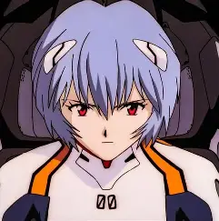

Neon Genesis Evangelion (Japanese: 新世紀エヴァンゲリオン, Hepburn: Shinseiki Evangerion; lit. 'New Century Evangelion' in Japanese and lit. 'New Beginning Gospel' in Greek), also known as simply Evangelion or Eva, is a Japanese anime television series produced by Gainax and Tatsunoko Production, and directed by Hideaki Anno. It was broadcast on TV Tokyo and its affiliates from October 1995 to March 1996. The story, set in 2015, fifteen years after a worldwide cataclysm in the futuristic fortified city of Tokyo-3, follows Shinji Ikari, a teenage boy who is recruited by his father Gendo Ikari to the mysterious organization Nerv. Shinji is tasked to pilot an Evangelion, a giant biomechanical mecha, to fight and destroy beings known as Angels.
